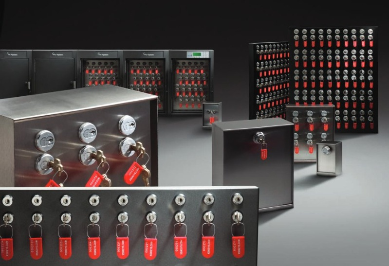
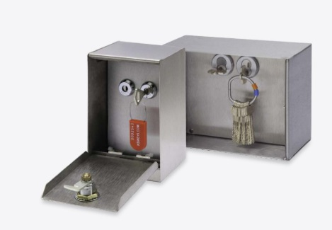
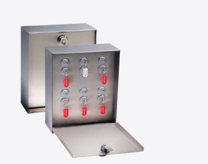
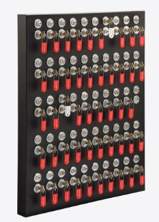
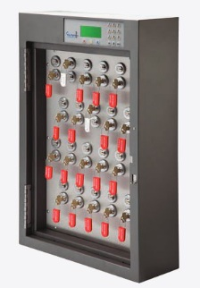
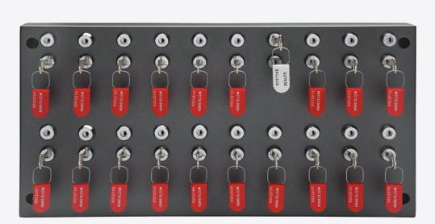
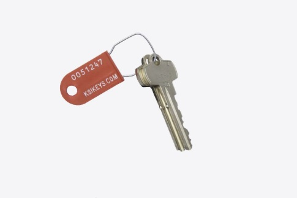

Productgegevens van de fabrikant · Key Systems, Inc.
Keycontroller
Chit-Key™ Vault en panelen — eenvoudig van opzet, superieur in werking


Chit-Key Vaults™ en panelen bieden een eenvoudige en slimme techniek om te verzekeren dat sleutels worden teruggebracht. Alle sloten werken in tandem, zodat de twee sleutels nooit tegelijk vrij kunnen komen. Zodra de eerste positie — de controlesleutel — op zijn plaats is vastgezet, komt de tweede positie, de gebruikssleutel, mechanisch vrij om te worden weggenomen. De controlesleutel blijft daarna vergrendeld tot de gebruikssleutel veilig is teruggebracht.
Chit-Key Vaults™ zijn er in twee maten, uitgevoerd in geslepen roestvast staal van 18 gauge. Deze kluizen zijn op elke gewenste maat aan te passen, met verschillende slotopties om aan uw eisen te voldoen.
Uitvoeringen

Eén tandempositie
Ook leverbaar als XL-uitvoering, liggend gemonteerd.

Zes posities
Deze Chit-Vault™ bevat zes tandemsloten. Die sloten kunnen desgewenst onder een hoofdsleutel worden gebracht om ook de voordeur van de Chit-Vault™ te besturen. Het deurslot en de binnensloten op dezelfde sluiting zetten is optioneel.

Het Multi-Chit paneel
Multi-Chit kan tot 50 Chit-posities tegelijk bevatten. Los op te hangen of ingebouwd in een SAM, met optionele elektrische deurbesturing.
Chit-Key™ · Uitvoeringen, vervolg
Panelen en zegellabels

In een SAM™
Chit-Key Vaults™ en Multi-Chit panelen zijn ook elektronisch te gebruiken met Security Asset Managers™ en GFMS™.

Wandpanelen
Voor 20 of 50 sleutels, in gepoedercoat staal van 16 gauge.

KSI Security Seal
Bij elk Chit-Key™-paneel horen genummerde zegellabels die zichtbaar maken of er aan is gezeten. Zo blijven sleutels verzegeld tijdens opslag én tijdens gebruik. Witte en rode labels onderscheiden de gebruikssleutel van de controlesleutel: handig voor medewerkers en voor een snelle visuele controle.
Chit-Key™ · Maten, gewichten en sloten
Kluizen
| Uitvoering | B × H × D (inch) | B × H × D (cm) | Gewicht |
|---|---|---|---|
| 1 tandempositie | 3¾ × 6 × 3¾ | 9,5 × 15,2 × 9,5 | 1,4 kg |
| 1 tandempositie XL, liggend | 8 × 5¾ × 4 | 20,3 × 14,6 × 10,2 | 2,2 kg |
| 6 tandemposities | 11¼ × 13¼ × 5 | 28,6 × 33,7 × 12,7 | 6,8 kg |
Materiaal: geslepen roestvast staal, 18 gauge.
Wandpanelen
| Uitvoering | B × H × D (inch) | B × H × D (cm) | Gewicht |
|---|---|---|---|
| 20 sleutels | 24 × 12⅛ × 2¼ | 61 × 30,8 × 5,7 | 9,1 kg |
| 50 sleutels | 24 × 28⅝ × 2¼ | 61 × 72,7 × 5,7 | 20,4 kg |
Beide uitvoeringen leverbaar met SFIC- of LFIC-cilinder, een cam-slot van ¾" of een mortise cilinder. Materiaal: gepoedercoat staal, 16 gauge.
SAM-panelen
| Uitvoering | B × H × D (inch) | B × H × D (cm) | Gewicht |
|---|---|---|---|
| 10 tandemposities | 18 × 18 × 6 | 45,7 × 45,7 × 15,2 | 9,1 kg |
| 20 tandemposities | 18 × 27⅛ × 6 | 45,7 × 68,9 × 15,2 | 20,4 kg |
| 32 tandemposities | 28⅛ × 27⅛ × 6 | 71,4 × 68,9 × 15,2 | 29,5 kg |
| 48 tandemposities | 28⅛ × 36 × 6 | 71,4 × 91,4 × 15,2 | 54,4 kg |
Sloten
- Hoogbeveiligd cam-slot van ¾" (¾" standaard, geschikt voor lengtes van ⅝" tot 1¼").
- Wisselbare cilinder, small of large format.
- Mortise cilinder, door de klant zelf geleverd — neem contact op voor de details.
KSI Security Seal
Chit-Key Vaults™ en Multi-Chit panelen zijn ook elektronisch te gebruiken met Security Asset Managers™ (SAM™) en GFMS™. Maten zijn omgerekend uit de opgave in inches en ponden van de fabrikant. Onder voorbehoud van wijzigingen.